Introduction
Kim Tae‑hyung, known professionally as V, was born on 30 December 1995 in Daegu, South Korea. He is a South Korean singer, actor, and member of BTS known for his deep, soothing baritone voice, distinctive artistic style and charismatic stage presence. V debuted with BTS on 13 June 2013 under Big Hit Entertainment. He was initially the group’s “secret member” before debut. He brings a unique warmth and richness to the group's sound, often standing out for his emotional delivery and ability to breathe life into a song.
Beyond his musical talents, Taehyung is known for his playful nature, thoughtful personality and appreciation for the arts. Taehyung has always embraced creativity in its many forms, from music and photography to fashion and acting. His solo album, Layover, offers a more intimate glimpse into his musical identity, drawing inspiration from jazz, R&B and his love for vintage sounds. Whether performing on stage, exploring his artistic interests or simply being his wonderfully unpredictable self, V continues to show that there are many sides to his artistry, each as fascinating as the last.
Early Life & Pre-Debut
Early Life & Background
Kim Taehyung was born on December 30, 1995, in Seo District, Daegu, South Korea, and grew up in Geochang County, South Gyeongsang Province. He was raised in a farming environment and spent a significant part of his childhood with his grandparents, an experience he has occasionally reflected on when discussing his upbringing.
Taehyung is the eldest of three children, with a younger brother and sister. Growing up, he developed an interest in music and initially dreamed of becoming a professional saxophonist. Encouraged by his father, he began learning the instrument during middle school and continued developing his musical interests.
Musical Interests & Early Aspirations
Before becoming a trainee, Taehyung explored different aspects of music, including playing the saxophone and participating in school performances. Although he had an interest in entertainment, becoming a K-pop idol was not originally part of his plans.
His early exposure to music and performance helped develop his appreciation for different musical styles, an interest that would later become particularly evident in his exploration of jazz, R&B, soul and other genres.
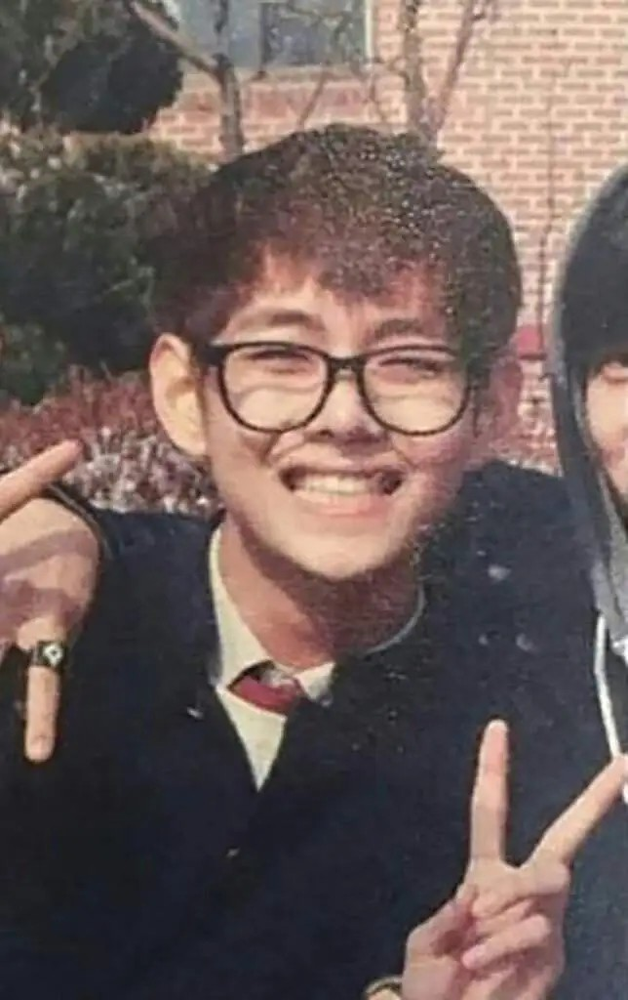
The Unexpected Big Hit Audition (2011)
He only went to support a friend. In 2011, Taehyung accompanied a friend to a Big Hit audition in Daegu, and a staff member encouraged him to audition too.
He decided to give it a try and successfully passed, eventually becoming a Big Hit trainee. Unlike several of the other members, who had deliberately pursued opportunities in the entertainment industry, Taehyung's entry into the company was largely unexpected.
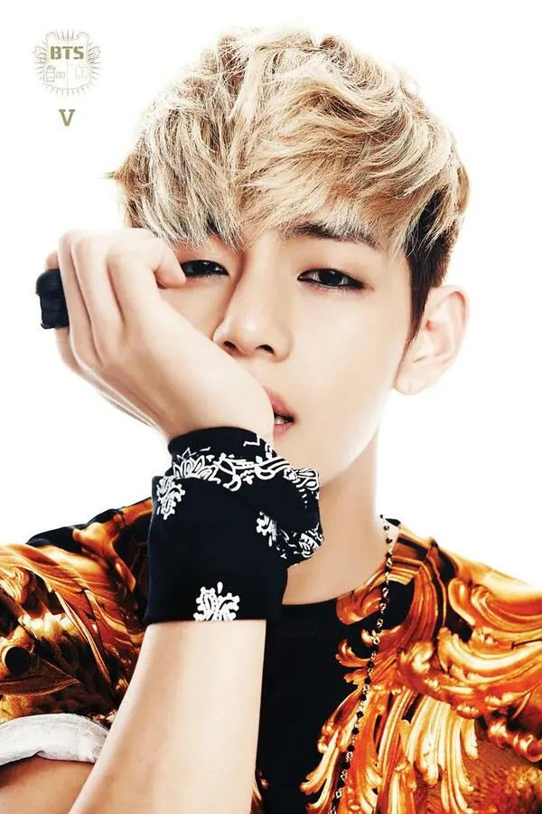
Life as BTS's Hidden Member
During his trainee years, Taehyung was kept completely hidden from the public as part of Big Hit's pre-debut promotional strategy. While the other members appeared in trainee photographs, videos and social media posts, Taehyung remained absent from the group's public activities.
He was sometimes present during the filming of the other members' logs but would remain out of camera view. He later spoke about how isolating this experience could be, particularly because he watched the others interact with fans and build relationships with the public while he had to remain undisclosed.
Despite this, Taehyung continued training alongside the other members, developing his singing, dancing and performance abilities in preparation for debut.
Trainee Years & Relationships
During his trainee period, Taehyung attended Korean Arts High School, where he studied alongside Jimin. The two eventually graduated together in 2014.
He developed close relationships with the other trainees, particularly Jimin, they are affectionately referred to as his soulmates. Their friendship became one of the most recognisable relationships within BTS and among ARMY.
His trainee years also allowed him to develop his distinctive vocal colour and stage personality, gradually becoming the performer audiences would eventually come to know as V.
Debut
Official Introduction & Debut (June 2013)
On June 13, 2013, Taehyung officially debuted as a member of BTS with the single album 2 COOL 4 SKOOL and its title track No More Dream. His introduction to the public was particularly significant because he had remained hidden throughout the group's pre-debut promotional period.
His deep, resonant vocal tone immediately provided a different texture to BTS's vocal arrangements, complementing the lighter vocal colours of the other members.
Early Activities & Public Presence
Following his introduction, Taehyung began actively participating in BTS's social media activities, sharing photographs, updates and behind-the-scenes moments with fans. His first group log was uploaded on June 16, 2013, alongside Jin, while his first individual log followed on July 10, 2013.
- June 13, 2013: Debuts with 2 COOL 4 SKOOL
- June 16, 2013: First group log, alongside Jin
- July 10, 2013: First individual log
As BTS began appearing on music programmes and variety shows, Taehyung gradually developed a reputation for his playful personality, unexpected humour and expressive interactions with the other members.
Establishing His Performance Identity
During BTS's early performances, Taehyung demonstrated an ability to combine vocal delivery with expressive stage presence. Although he was introduced primarily as a vocalist, he also trained extensively in choreography and developed into a capable dancer.
His facial expressions, confident movements and ability to communicate emotion through performance became increasingly recognisable features of his artistic identity.
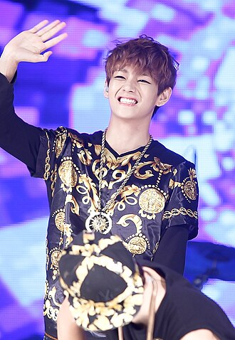
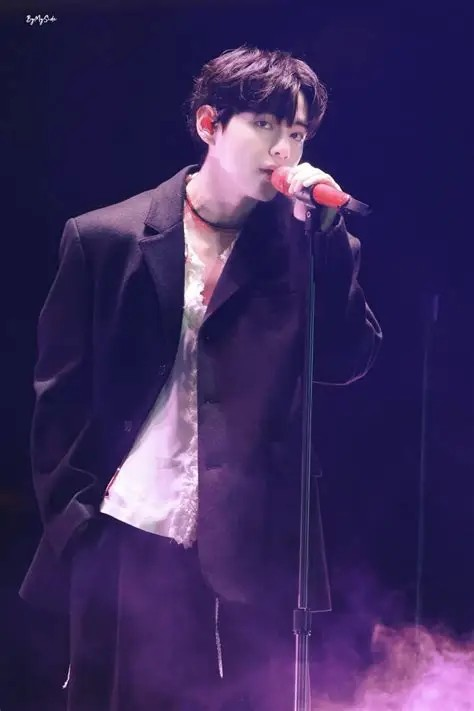
In BTS
Vocalist: The Baritone Foundation
One of Taehyung's most distinctive contributions to BTS is his deep baritone voice, which provides a contrasting vocal colour within the group's vocal line.
His warm, rich and slightly husky tone gives BTS's musical arrangements additional depth, particularly in songs that require lower harmonies, atmospheric vocals or emotionally expressive delivery.
Although his voice is naturally suited to lower registers, Taehyung has also demonstrated the ability to reach higher notes when required, showing versatility beyond his characteristic baritone range.
Notable Vocal Contributions
Stigma
An emotionally demanding solo performance that highlights his vocal expression and ability to convey vulnerability.
Singularity
Showcases his breathy, controlled delivery and ability to create an atmospheric musical experience.
The Truth Untold
Demonstrates his ability to contribute delicate, emotional vocals to a vocal-line arrangement.
Blue & Grey
Highlights his contribution to BTS's softer, introspective musical direction.
Inner Child
Showcases a brighter, more uplifting vocal approach.
Performance & Stage Presence
Taehyung possesses an expressive performance style that combines controlled movements, distinctive facial expressions and strong emotional interpretation. His background in acting and natural understanding of expression allow him to communicate different emotions through subtle changes in his gaze, body language and stage movements.
He is particularly recognised for his ability to maintain a captivating stage presence without necessarily relying on exaggerated movements. His performances often incorporate an almost theatrical quality, allowing him to bring character and personality into BTS's choreography and musical storytelling.
His performance in Blood Sweat & Tears, particularly the visual and emotional elements of the music video, and his solo performance of Singularity demonstrate this distinctive approach.
Creative Contributor & Songwriter
Beyond his vocal contributions, Taehyung has participated in BTS's songwriting and composition, bringing personal experiences, emotions and creative ideas into the group's music. His contributions frequently explore themes of loneliness, nostalgia, friendship, personal reflection and emotional vulnerability.
- 4 O'Clock: A collaboration with RM that explores friendship, loneliness and the comfort of having someone who understands you.
- Blue & Grey: A deeply introspective song that explores emotional exhaustion, sadness and the desire for comfort.
- Hold Me Tight: One of his early songwriting contributions.
- Run: Another track featuring his songwriting contributions during BTS's earlier years.
Artistic & Visual Influence
Taehyung has a strong appreciation for visual art, photography, fashion and aesthetics. His creative interests are reflected in the way he approaches music videos, photographs, stage concepts and personal artistic projects.
Taehyung's Unique Contributions to BTS
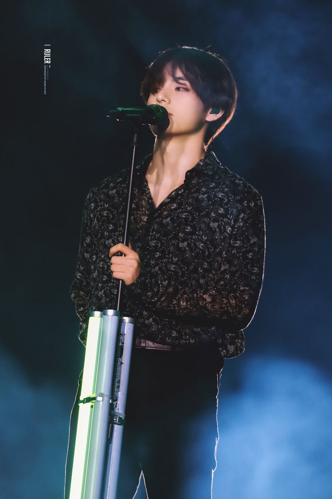
Vocalist (Baritone Specialist)
- Distinctive Vocal Colour: His deep, rich baritone provides a unique texture to BTS's vocal arrangements, balancing the group's higher vocal registers.
- Genre Versatility: Demonstrates an ability to adapt to jazz, R&B, soul, pop and ballad arrangements.
- Emotional Interpretation: Uses vocal texture, phrasing and controlled delivery to communicate vulnerability and emotional depth.
- Vocal Range: Although recognised for his lower register, he is also capable of delivering higher notes when required.
Examples: Singularity, Stigma, The Truth Untold
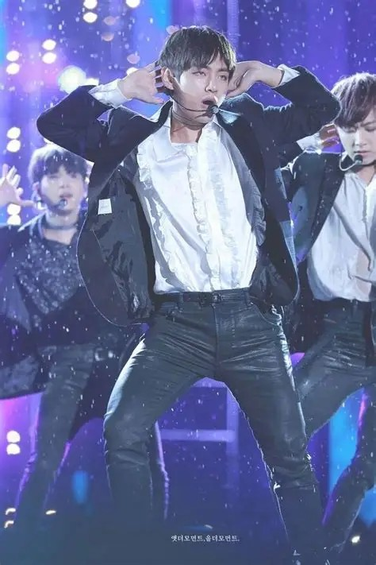
Performance & Visual Artist
- Expressive Stage Presence: Uses facial expressions, eye contact and controlled movements to create memorable performances.
- Emotional Storytelling: Incorporates theatrical expression and acting techniques into his performances.
- Visual Identity: Brings a distinctive appreciation for vintage fashion, cinematic imagery and artistic aesthetics.
- Performance Versatility: Adapts his stage presence to different musical concepts, from playful performances to darker and more introspective stages.
Examples: Blood Sweat & Tears, Singularity
Creative Contributor
- Songwriting & Composition: Contributes personal experiences and emotional perspectives to BTS's music.
- Artistic Exploration: Introduces influences from jazz, R&B and other musical styles.
- Visual Creativity: His interest in photography and visual arts adds another dimension to his creative identity.
- Conceptual Expression: Brings a distinctive artistic perspective to the group's musical and visual storytelling.
Examples: Blue & Grey, 4 O'Clock, Vante
V Outside the Music
Acting Career
Taehyung made his acting debut in 2016 through KBS2's historical drama Hwarang: The Poet Warrior Youth, where he played the supporting role of Hansung.
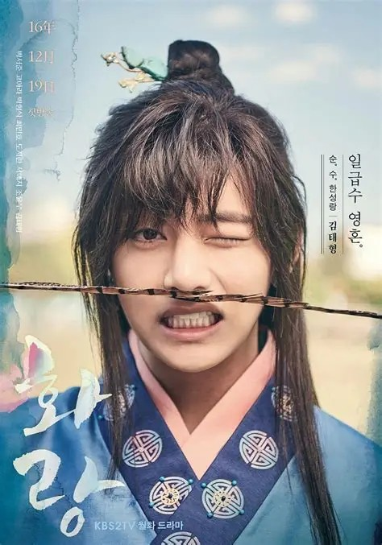
Hwarang: The Poet Warrior Youth
Year: 2016
Network: KBS2
Role: Hansung (supporting)
Credited as: Kim Taehyung, his real name, rather than his stage name V
His involvement in the drama also allowed him to explore another aspect of his artistic abilities beyond music and performance. He further contributed to the drama's soundtrack alongside Jin through the song It's Definitely You, showcasing another collaboration between the two members.
Solo Artistic Development
Taehyung's individual musical identity is characterised by his interest in exploring genres and sounds outside conventional K-pop. His musical influences include jazz, R&B, soul and traditional pop, with a particular appreciation for older musical styles and vintage sounds.
His solo releases have allowed him to explore these influences more extensively, presenting a more intimate and personal side of his artistry.
Layover
Released: September 8, 2023
His solo album, particularly representative of his musical direction and highlighting his preference for understated arrangements, smooth melodies and relaxed musical expression.
Notable tracks: Slow Dancing, Love Me Again, Rainy Days
Photography & Visual Arts: Vante
Photography is one of Taehyung's most recognised creative interests. Under the name Vante, which is the combination of his stage name 'V' and the name of his favorite photographer 'Ante Badzim', he shares photographs that reflect his appreciation for composition, colour, lighting and visual storytelling.
His photography frequently incorporates natural scenery, architecture, portraits and everyday moments, often presented through a nostalgic or cinematic perspective. His interest also extends to the visual presentation of BTS's projects, demonstrating that his creativity is not limited to music.
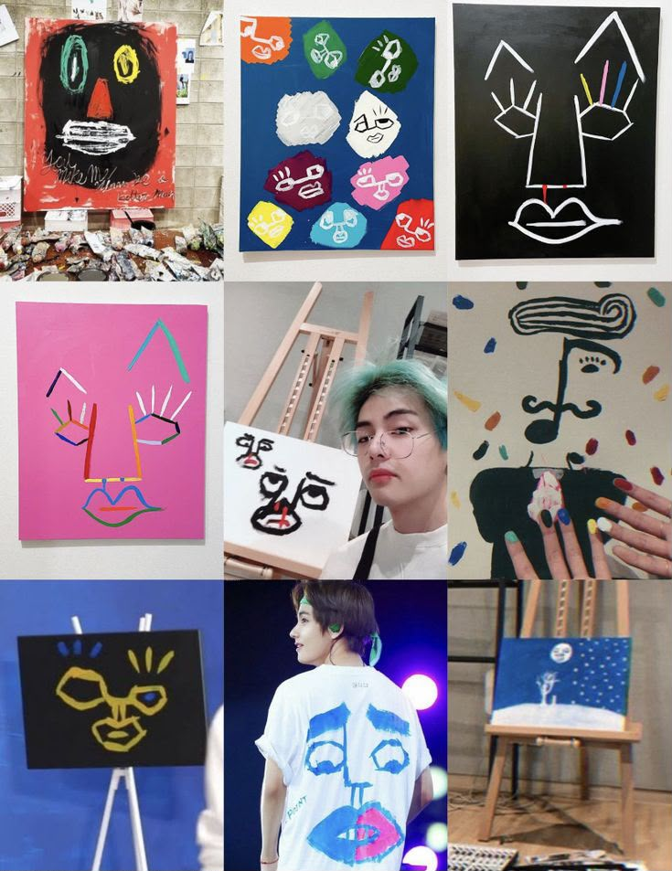
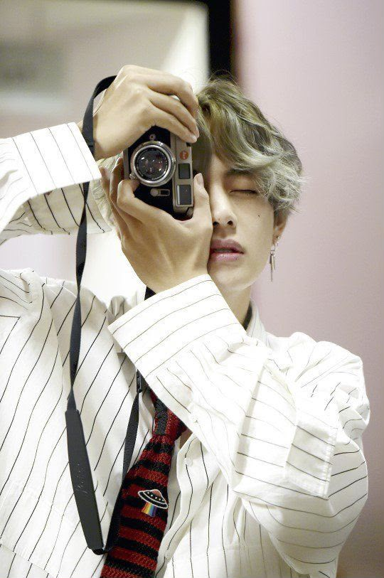
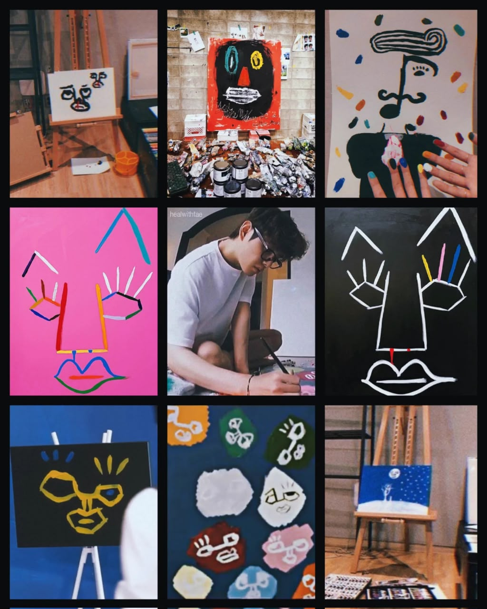
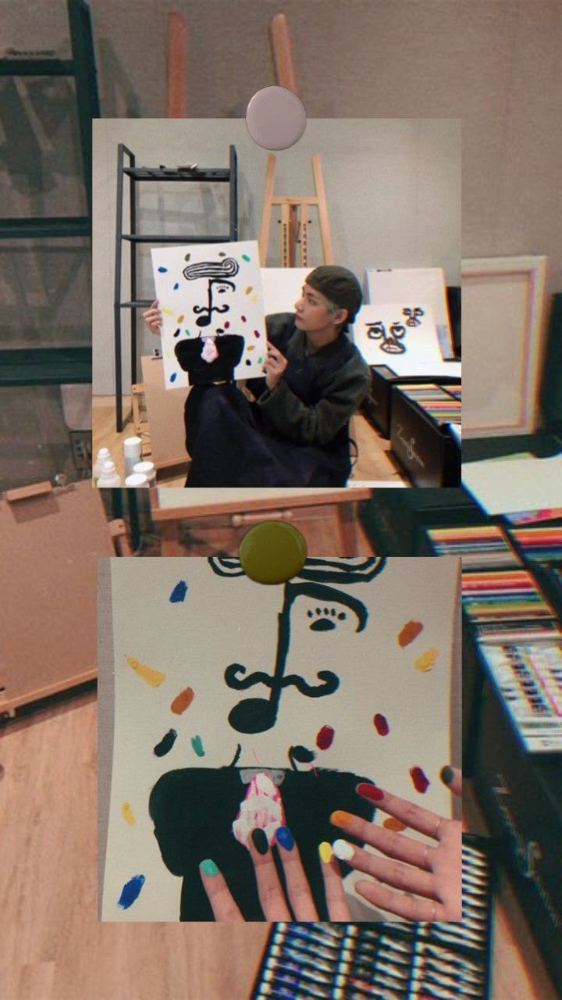
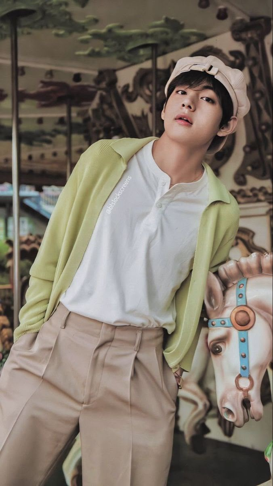
Fashion & Personal Style
Taehyung is recognised for his distinctive fashion sense, often incorporating vintage-inspired clothing, classic silhouettes, bold accessories and unconventional combinations.
His interest in fashion reflects his broader appreciation for artistic expression, and he has frequently been associated with luxury fashion and high-fashion editorial projects. His ability to move between contemporary fashion, vintage aesthetics and classic menswear has helped establish him as a prominent figure in the fashion industry.
"I purple you." Introduced by Taehyung during a BTS fan meeting in 2016, it became one of the most enduring expressions of affection within the fandom. Purple subsequently became a defining colour associated with BTS and ARMY, representing trust, love and a promise to remain together for a long time.
TMI
- Tae is Bangtan's social butterfly
- He makes the best silly faces
- Once he's on BTS RUN, he lies like he breathes (I would too...)
- He has won the title of the most handsome man in the world for 2020, 2021, 2023, 2025 and 2026 (Period)
- He yells for no reason most of the time...
- He's a natural performer (he just has that aura)
- His nickname is often CGV, because fans joke that his visuals look computer-generated.
- His animal character is a Bear
Made with love for BTS and ARMY